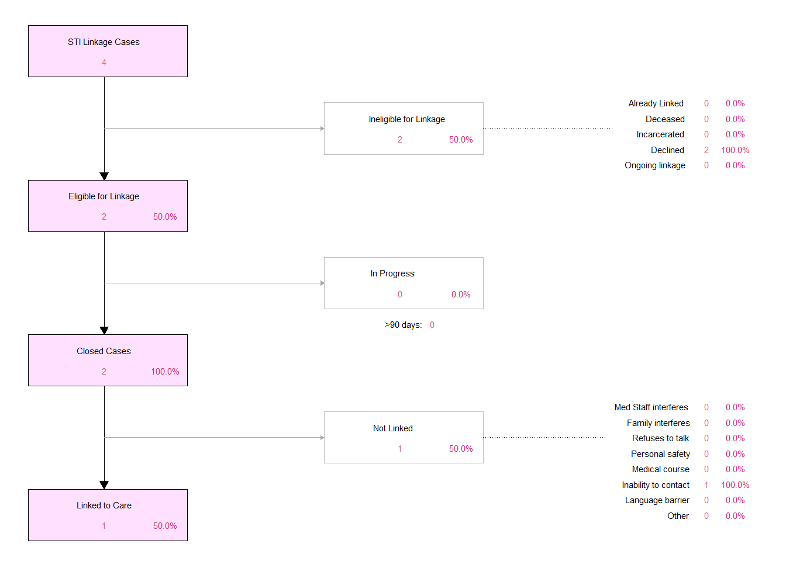

Sexually Transmitted Infections (STI)
CCTST Syphilis Screening
The CCTST Syphilis screening project looks at the ED testing data since January 1st, 2024. This report lists all University of Cincinnati Medical Center Emergency Department (UCMC ED) based Syphilis testing ordered. EIP staff began prompting medical staff to additionally order Syphilis testing with other STI/HIV testing on April 1st, 2024. An Epic BPA to suggest Syphilis testing in addition to when Chlamydia/Gonorrhea is ordered took effect on May 21st, 2024.
The total daily testing numbers for Syphilis TREPONEMA PALLIDUM AB WITH REFLEX (Trepia Ab) tests are shown in the table below, as well as a plot showing the daily trend in testing numbers. Since the testing algorithm for UCMC is the intiial Trepia Ab test with a reflex to RPR W TITER (RPR), it is assumed using the Trepia testing numbers as the number for total tests is accurate. The overall Syphilis positivity rate for the tests is included, using the RPR as the confirmatory test for a known positive case. The unique number of tests is determined by the CSN for the encounter in which the test was ordered. The test is only included if the Order Status is “Completed” and is currently only including tests conducted at UCMC ED.
It is important to note that since CHI lab data is received every Tuesday afternoon, the data for the daily/monthly numbers for the current day/month are only estiamtes until the full dataset is received. For example, if data is pulled in the afternoon, then the tests conducted in the morning are counted, but not tests conducted later in the evening for that day. The day that this report was compiled is shown at the top of the report, and the data likely represents data collected up through the Monday/Tuesday prior, depending on when CHI pulled the data. Also, depending on when the data was pulled, not all test results are finalized, so the positivity rate and number of positive tests/patients may also be slightly different. However, this should only pertain to the day the data is pulled, and not prior days included in the analysis.
The red line indicates when EIP intervention began, prompting medical staff to include syphilis testing when appropriate.
The red line indicates when EIP intervention began, prompting medical staff to include syphilis testing when appropriate.
STI Linkage to Care
The flowchart of the STI Linkage to Care efforts for EIP are shown below. This flow diagram shows linkage to care efforts for all STI linkage cases initiated within EIP.
